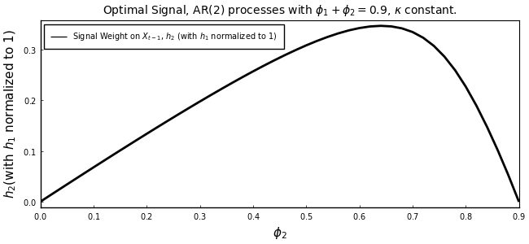
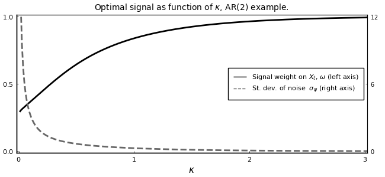
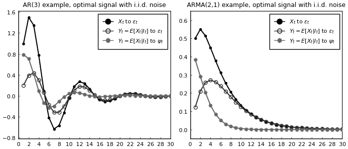
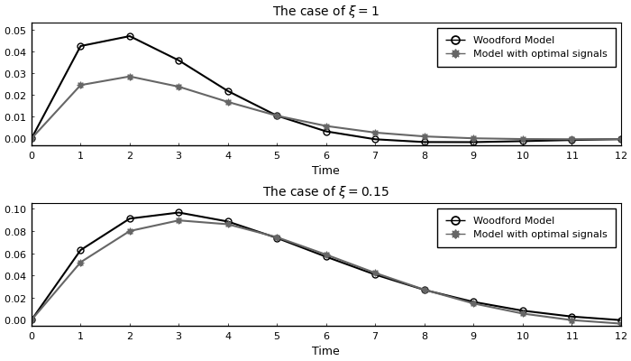
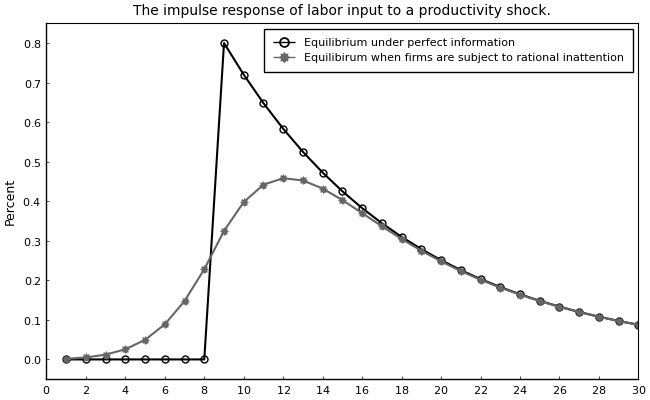

Replication of Mackowiak, Matejka and Wiederholt (2018)
This example replicates Mackowiak, Matejka and Wiederholt (2018) using the DRIPs package.
 to run and modify the following code (no software is needed on the local machine).
to run and modify the following code (no software is needed on the local machine).
See Afrouzi and Yang (2020) for background on the theory.
Contents
- Ex. 1: AR(2) Process
- Ex. 2: AR(3) and ARMA(2,1) Processes
- Ex. 3: Price-setting with Rational Inattention
- Ex. 4: Business Cycle Model with News Shocks
Ex. 1: AR(2) Process
In this example, authors assume that the optimal action follows an AR(2) process,
Then, we can write a state-space form as:
We now characterize the optimal signal, $S_{t} = h_1 X_t + h_2 X_{t-1} + \psi_t$, as a function of $\phi_2$ and the capacity for information processing ($\kappa$).
Initialization
Include the package:
using DRIPs, LinearAlgebra;
nothing #hideAssign value to deep parameters and define the structure of the problem
β = 1.0 ; # Time preference
θ0 = 1.0 ;
ϕ2_seq = 0:0.02:0.9 ; # sequence of values for the AR(2) parameter
n_ϕ = length(ϕ2_seq) ;
κ_seq = 0.008:0.01:3.5 ; # sequence of values for the information processing capacity
n_κ = length(κ_seq) ;
H = [1; 0] ;
Q = [θ0 ; 0] ;
nothing #hideReplication of Figures (2) and (3)
Solve for different values of $\phi_2$:
κ = 0.2 ; # fix κ for this exercise so we can vary ϕ2
h1 = zeros(n_ϕ,1) ;
h2 = zeros(n_ϕ,1) ;
h2norm = zeros(n_ϕ,1) ;
for i in 1:n_ϕ
ϕ2 = ϕ2_seq[i] ;
ϕ1 = 0.9 - ϕ2 ;
A = [ϕ1 ϕ2 ; 1.0 0.0] ;
ex1a = Drip(κ,β,A,Q,H,fcap=true);
h1[i] = ex1a.ss.Y[1]
h2[i] = ex1a.ss.Y[2]
h2norm[i] = ex1a.ss.Y[2]/ex1a.ss.Y[1] # normalize the first signal weight h1 to one
endHere is the replication of Figure (2):
using Printf, LaTeXStrings, Plots; pyplot();
plot(ϕ2_seq,h2norm[:,1],
title = L"Optimal Signal, AR(2) processes with $\phi_1 + \phi_2 = 0.9$, $\kappa$ constant.",
xlabel = L"$\phi_2$",
ylabel = L"$h_2$(with $h_1$ normalized to 1)",
label = L"Signal Weight on $X_{t-1}$, $h_2$ (with $h_1$ normalized to 1)",
legend = :topleft,
lw = 2,
color = :black,
xlim = (0,0.9),
xticks = (0:0.1:0.9),
titlefont = font(10), legendfont = font(7), tickfont = font(7),
size = (650,300),
grid = :off, framestyle = :box)
Now, we solve for the signal weight and standard deviation of noise, for different values of $\kappa$
ϕ2 = 0.4 ; # fix ϕ2 in this exercise so we can vary κ
ϕ1 = 0.99 - ϕ2 ;
A = [ϕ1 ϕ2 ; 1.0 0.0] ;
ω_sol = zeros(n_κ,1) ;
σz_sol = zeros(n_κ,1) ;
for i in 1:n_κ
κ = κ_seq[i] ;
ex1b = Drip(κ,β,A,Q,H,fcap=true);
h1temp = ex1b.ss.Y[1]
h2temp = ex1b.ss.Y[2]
ω_sol[i] = 1.0 - (h2temp/h1temp)/(ϕ2 + (1.0-ϕ1)*(h2temp/h1temp)) ;
ρ = (ω_sol[i] + (1.0-ω_sol[i])*ϕ1)/h1temp
σz_sol[i] = ρ*ex1b.ss.Σ_z[1,1] ;
endBelow is the replication of Figure (3):
a = fill(NaN, n_κ, 1)
plot(κ_seq,[ω_sol[:,1] a],
xlabel = L"$\kappa$",
label = [L"Signal weight on $X_{t}$, $\omega$ (left axis)" L"St. dev. of noise $\sigma_{\psi}$ (right axis)"],
title = L"Optimal signal as function of $\kappa$, AR(2) example.",
linestyle = [:solid :dash], color = [:black :gray40],
xticks = (0:1:3),
xlim = (-0.02,3.02),
yticks = (0:0.5:1),
ylim = (-0.01,1.01),
lw = 2, grid = :off, legend = :right,
titlefont = font(10), legendfont = font(8), tickfont = font(8),
framestyle = :box)
plot!(twinx(),κ_seq,σz_sol[:,1],
linestyle = :dash, color = :gray40,
label = "",
xlim = (-0.02,3.02),
xticks = false,
yticks = (0:6:12),
ylim = (-0.12,12.12),
lw = 2, tickfont = font(7),
size = (650,300),
grid = :off, framestyle = :box)
Measure Performance
Benchmark the solution for random values of $\phi_2$:
using BenchmarkTools;
@benchmark Drip(κ,β,[0.9-ϕ2 ϕ2; 1.0 0.0],Q,H,fcap = true) setup = (ϕ2 = 0.9*rand())BenchmarkTools.Trial:
memory estimate: 431.52 KiB
allocs estimate: 4150
--------------
minimum time: 208.853 μs (0.00% GC)
median time: 248.778 μs (0.00% GC)
mean time: 305.579 μs (18.04% GC)
maximum time: 6.972 ms (95.35% GC)
--------------
samples: 10000
evals/sample: 1Benchmark the solution for random values of $κ$:
@benchmark Drip(κ,β,[0.5 0.4; 1.0 0.0],Q,H,fcap = true) setup = (κ = rand())BenchmarkTools.Trial:
memory estimate: 74.66 KiB
allocs estimate: 729
--------------
minimum time: 40.597 μs (0.00% GC)
median time: 121.589 μs (0.00% GC)
mean time: 215.463 μs (18.02% GC)
maximum time: 7.279 ms (91.38% GC)
--------------
samples: 10000
evals/sample: 1Ex. 2: AR(3) and ARMA(2,1) Processes
Here, we replicate the AR(3) and ARMA(2,1) examples in Mackowiak, Matejka and Wiederholt (2018). Using a similar method to the AR(2) case, we can write the law of motion of optimal actions as a state-space form.
Solve and Meausre Performance
The AR(3) Example
Initialize:
β = 1.0 ;
θ0 = 1.0 ;
κ = 10.8 ;
ϕ1 = 1.5 ;
ϕ2 = -0.9 ;
ϕ3 = 0.1 ;
A = [ϕ1 ϕ2 ϕ3 ; 1 0 0 ; 0 1 0] ;
Q = [θ0 ; 0; 0] ;
H = [1 ; 0; 0] ;
nothing #hideSolve:
ex2a = Drip(κ,β,A,Q,H;tol=1e-8);
nothing #hideMeasure performance for different values of $\kappa$:
@benchmark Drip(κ,β,A,Q,H;tol=1e-8) setup = (κ = 10*rand())BenchmarkTools.Trial:
memory estimate: 147.59 KiB
allocs estimate: 1044
--------------
minimum time: 150.313 μs (0.00% GC)
median time: 554.403 μs (0.00% GC)
mean time: 578.350 μs (7.45% GC)
maximum time: 5.389 ms (83.21% GC)
--------------
samples: 8625
evals/sample: 1To be consistent with MMW(2018), scale the signal vector so that the weight on the first element is one ($h_1 = 1$):
h1 = 1;
h2 = ex2a.ss.Y[2]/ex2a.ss.Y[1]
h3 = ex2a.ss.Y[3]/ex2a.ss.Y[1]0.05349220551890679Print the weights:
s = @sprintf(" h1 = %5.3f, h2 = %5.3f, h3 = %5.3f", h1, h2, h3) ;
println(s) ;
nothing #hide h1 = 1.000, h2 = -0.475, h3 = 0.053
Since we scaled the signal vector, we also need to adjust the noise in the signal accordingly:
AdjNoise = 3.879
AdjPara_ex2a= AdjNoise*ex2a.ss.Y[1]0.7839654755293674Calculate IRFs:
irf_ex2a = irfs(ex2a; T=30) ;
xirf_ex2a = irf_ex2a.x[1,1,:]
xhatirf_ex2a= irf_ex2a.x_hat[1,1,:]
x = zeros(3,30);
xhat_noise_ex2a = zeros(3,30);
for ii in 1:30
if ii==1
xhat_noise_ex2a[:,ii] = ex2a.ss.K;
else
xhat_noise_ex2a[:,ii] = A*xhat_noise_ex2a[:,ii-1]+(ex2a.ss.K*ex2a.ss.Y')*(x[:,ii]-A*xhat_noise_ex2a[:,ii-1]);
end
end
xhat_noise_ex2a = xhat_noise_ex2a[1,:]*AdjPara_ex2a ;
nothing #hideThe ARMA(2,1) Example:
Initialize:
β = 1.0 ;
θ0 = 0.5 ;
θ1 = -0.1 ;
κ = 1.79 ;
ϕ1 = 1.3 ;
ϕ2 = -0.4 ;
A = [ϕ1 ϕ2 θ1 ; 1.0 0.0 0.0 ; 0.0 0.0 0.0] ;
Q = [θ0 ; 0.0; 1.0] ;
H = [1.0; 0.0; 0.0] ;
nothing #hideSolve:
ex2b = Drip(κ,β,A,Q,H,tol=1e-8);
nothing #hideMeasure performance for different values of $\kappa$:
@benchmark Drip(κ,β,A,Q,H;tol=1e-8) setup = (κ = 2*rand())BenchmarkTools.Trial:
memory estimate: 109.88 KiB
allocs estimate: 777
--------------
minimum time: 116.629 μs (0.00% GC)
median time: 400.173 μs (0.00% GC)
mean time: 418.805 μs (6.45% GC)
maximum time: 5.120 ms (87.81% GC)
--------------
samples: 10000
evals/sample: 1To be consistent with MMW(2018), scale the signal vector so that the weight on the first element is one ($h_1 = 1$):
h1 = 1;
h2 = ex2b.ss.Y[2]/ex2b.ss.Y[1]
h3 = ex2b.ss.Y[3]/ex2b.ss.Y[1]-0.0687478067895003Print the weights:
s = @sprintf(" h1 = %5.3f, h2 = %5.3f, h3 = %5.3f", h1, h2, h3) ;
println(s) ;
nothing #hide h1 = 1.000, h2 = -0.275, h3 = -0.069
Since we scaled the signal vector, we also need to adjust the noise in the signal accordingly:
AdjNoise = 1.349
AdjPara_ex2b= AdjNoise*ex2b.ss.Y[1]0.3828466148956306Calculate the IRFs
irf_ex2b = irfs(ex2b; T=30) ;
xirf_ex2b = irf_ex2b.x[1,1,:]
xhatirf_ex2b = irf_ex2b.x_hat[1,1,:]
x = zeros(3,30);
xhat_noise_ex2b = zeros(3,30);
for ii in 1:30
if ii==1
xhat_noise_ex2b[:,ii] = ex2b.ss.K;
else
xhat_noise_ex2b[:,ii] = A*xhat_noise_ex2b[:,ii-1]+(ex2b.ss.K*ex2b.ss.Y')*(x[:,ii]-A*xhat_noise_ex2b[:,ii-1]);
end
end
xhat_noise_ex2b = xhat_noise_ex2b[1,:]*AdjPara_ex2b ;
nothing #hideReplication of Figure (5)
p1 = plot(1:30,[xirf_ex2a xhatirf_ex2a xhat_noise_ex2a],
title = "AR(3) example, optimal signal with i.i.d. noise",
color = [:black :gray20 :gray40], markerstrokecolor = [:black :gray20 :gray40],
yticks = (-0.8:0.4:1.6),
ylim = (-0.82,1.62))
p2 = plot(1:30,[xirf_ex2b xhatirf_ex2b xhat_noise_ex2b],
title = "ARMA(2,1) example, optimal signal with i.i.d. noise",
color = [:black :gray20 :gray40], markerstrokecolor = [:black :gray20 :gray40],
yticks = (0:0.1:0.6),
ylim = (-0.05,0.65))
Plots.plot(p1,p2,
layout = (1,2),
label = [L"$X_{t}$ to $\varepsilon_t$" L"$Y_t=E[X_t|I_t]$ to $\varepsilon_t$" L"$Y_t=E[X_t|I_t]$ to $\psi_t$"],
marker = [:circle :circle :star8], markercolor = [:black :false :gray40], markersize = [3 5 5],
legend = :topright,
xticks = (0:2:30),
xlim = (0,30),
lw = 1.5,
legendfont = font(8), guidefont=font(9), titlefont=font(9), tickfont=font(8),
size = (700,300),
grid = :off, framestyle = :box)
Ex. 3: Price-setting with Rational Inattention
We now replicate the price-setting exercise in MMW (2018) and its comparison with the Woodford (2002) example. This corresponds to Figure (6) in their paper. The model structure is identifcal to our Example 1 (without strategic complementarity) and Example 2 (with strategic complementarity).
The Case with No Strategic Complementarity
Initialize:
ρ = 0.9; #persistence of money growth
σ_u = 0.1; #std. deviation of shocks to money growth
nothing #hidePrimitives of the DRIP:
κ = 0.62;
β = 1.0;
A = [1 ρ; 0 ρ];
Q = σ_u*[1; 1];
H = [1; 0];
ω = 0.10.1Solve:
ex_opt = Drip(κ,β,A,Q,H,fcap=true);
capa_opt = DRIPs.capacity(ex_opt) #returns capacity utilized in bits0.6196339094366835Measure performance for different values of $\kappa$:
@benchmark Drip(κ,β,A,Q,H,fcap=true) setup = (κ = 2*rand())BenchmarkTools.Trial:
memory estimate: 206.02 KiB
allocs estimate: 1988
--------------
minimum time: 104.888 μs (0.00% GC)
median time: 209.835 μs (0.00% GC)
mean time: 427.268 μs (18.40% GC)
maximum time: 31.527 ms (21.48% GC)
--------------
samples: 10000
evals/sample: 1Calculate IRFs:
irfs_ex_opt = irfs(ex_opt, T = 12);
output_opt = (irfs_ex_opt.x[1,1,:] - irfs_ex_opt.a[1,1,:]) ;
output_opt = [0;output_opt] ;
nothing #hideNow, to compare with Woodford (2002), assume that firms observe a noisy signal, $S_t = q_t + \zeta_t$ where $\zeta_t$ is an idiosyncratic noise. We first define a function to solve the corresponding Kalman filtering problem.
function K_filtering(A,Q,Ysignal,Σz,Σ0 ; maxit=10000,tol=1e-10,w=1)
err = 1
iter = 0
while (err > tol) & (iter < maxit)
global Knew = Σ0*Ysignal*inv(Ysignal'*Σ0*Ysignal .+ Σz)
global Σp_temp = Σ0 - Knew*Ysignal'*Σ0
global Σ1 = A*Σp_temp*A' + Q*Q'
err = norm(Σ1 - Σ0,2)/norm(Σ0,2)
Σ0 = w*Σ1 + (1-w)*Σ0
#println("Iteration $iter. Difference: $err")
iter += 1
end
return(Knew,Σ0,Σp_temp)
end;
nothing #hideNow find the capacity utilized under Woodford’s formulation such that it yields the same information flow as the optimal signal under ratinoal inattention.
Ywoodford = [1;0]
Σ1_init = ex_opt.ss.Σ_1
Σz_new_b = 0.01
Σz_new_u = 0.1
Σz_new = (Σz_new_b+Σz_new_u)/2
for i in 1:10000
(Knew,Σ1_new,Σp_temp) = K_filtering(A,Q,Ywoodford,Σz_new,Σ1_init;w=0.5)
capa_woodford = 0.5*log(det(Σ1_new)/det(Σp_temp))/log(2)
if capa_woodford > capa_opt
global Σz_new_b = Σz_new
else
global Σz_new_u = Σz_new
end
global Σz_new = (Σz_new_b+Σz_new_u)/2
err = abs(capa_woodford - capa_opt)
if err < 1e-5
break
end
endCalculate impulse responses under Woodford's formulation
e_k = 1;
x = zeros(2,12);
xhat= zeros(2,12);
a = zeros(2,12);
for ii in 1:12
if ii==1
x[:,ii] = Q*e_k;
xhat[:,ii] = (Knew*Ywoodford')*(x[:,ii]);
else
x[:,ii] = A*x[:,ii-1];
xhat[:,ii] = A*xhat[:,ii-1]+(Knew*Ywoodford')*(x[:,ii]-A*xhat[:,ii-1]);
end
a[:,ii] .= H'*xhat[:,ii];
end
output_woodford = (x[1,:] - a[1,:]) ;
output_woodford = [0;output_woodford] ;
nothing #hideBefore plotting the IRFs, we also solve the case with strategic complementarity.
The Case with Strategic Complementarity
We now turn to the example with strategic complementarity. As in our Example 2, we first define a function to solve the fixed point with endogenous feedback.
function ge_drip(ω,β,A,Q, #primitives of drip except for H because H is endogenous
α, #strategic complementarity
Hq, #state space rep. of Δq
L; #length of truncation
H0 = Hq, #optional: initial guess for H (Hq is the true solution when α=0)
maxit = 200, #optional: max number of iterations for GE code
tol = 1e-4) #optional: tolerance for iterations
err = 1;
iter = 0;
M = [zeros(1,L-1) 0; Matrix(I,L-1,L-1) zeros(L-1,1)];
while (err > tol) & (iter < maxit)
if iter == 0
global ge = Drip(ω,β,A,Q,H0; w=0.9);
else
global ge = Drip(ω,β,A,Q,H0; Ω0=ge.ss.Ω, Σ0=ge.ss.Σ_1, maxit=100);
end
XFUN(jj) = ((I-ge.ss.K*ge.ss.Y')*ge.A)^jj * (ge.ss.K*ge.ss.Y') * (M')^jj
X = DRIPs.infinitesum(XFUN; maxit=L, start = 0); #E[x⃗]=X×x⃗
XpFUN(jj) = α^jj * X^(jj)
Xp = DRIPs.infinitesum(XpFUN; maxit=L, start = 0);
H1 = (1-α)*Xp'*Hq;
err= 0.5*norm(H1-H0,2)/norm(H0)+0.5*err;
H0 = H1;
iter += 1;
if iter == maxit
print("GE loop hit maxit\n")
elseif mod(iter,10) == 0
println("Iteration $iter. Difference: $err")
end
end
print(" Iteration Done.\n")
return(ge)
end;
nothing #hideNow, we solve for the optimal signal structure under rational inattention.
Initialize:
ρ = 0.9; #persistence of money growth
σ_u = 0.1; #std. deviation of shocks to money growth
α = 0.85; #degree of strategic complementarity
L = 40; #length of truncation
Hq = ρ.^(0:L-1); #state-space rep. of Δq
ω = 0.08;
β = 1 ;
A = [1 zeros(1,L-2) 0; Matrix(I,L-1,L-1) zeros(L-1,1)];
M = [zeros(1,L-1) 0; Matrix(I,L-1,L-1) zeros(L-1,1)]; # shift matrix
Q = [σ_u; zeros(L-1,1)];
nothing #hideSolve:
ex_ge = ge_drip(ω,β,A,Q,α,Hq,L) ;
nothing #hideIteration 10. Difference: 0.0019552334926346503
Iteration Done.
Print capacity utilized in with strategic complementarity:
capa_ge = DRIPs.capacity(ge)0.5830085573346633Measure performance for random values of ω
using Suppressor
@suppress @benchmark ge_drip(ω,β,A,Q,α,Hq,L) setup = (ω = 0.1*rand())BenchmarkTools.Trial:
memory estimate: 348.71 MiB
allocs estimate: 43486
--------------
minimum time: 283.261 ms (7.39% GC)
median time: 290.786 ms (7.18% GC)
mean time: 294.165 ms (7.51% GC)
maximum time: 317.900 ms (7.65% GC)
--------------
samples: 17
evals/sample: 1Calculate IRFs
geirfs = irfs(ex_ge,T = L) ;
dq = diagm(Hq)*geirfs.x[1,1,:];
q = inv(I-M)*dq ;
output_ge_opt = q - geirfs.a[1,1,:] ;
output_ge_opt = [0;output_ge_opt] ;
nothing #hideFinally, to compare with the IRFs under Woodford (2002)’s specification, we find signal noise such that it yields the same information flow as the optimal signal structure.
Ywoodford_ge = Hq
Σ1_init = ex_ge.ss.Σ_1
Σz_new_b = 0.05
Σz_new_u = 0.12
Σz_new = (Σz_new_b+Σz_new_u)/2
for i in 1:10000
(Knew,Σ1_new,Σp_temp) = K_filtering(A,Q,Ywoodford_ge,Σz_new,Σ1_init;w=0.5)
capa_woodford = 0.5*log(det(Σ1_new)/det(Σp_temp))/log(2)
if capa_woodford > capa_ge
global Σz_new_b = Σz_new
else
global Σz_new_u = Σz_new
end
global Σz_new = (Σz_new_b+Σz_new_u)/2
err = abs(capa_woodford - capa_ge)
if err < 1e-5
break
end
end
XFUN(jj) = ((I-Knew*Ywoodford_ge')*A)^jj * (Knew*Ywoodford_ge') * (M')^jj
X = DRIPs.infinitesum(XFUN; maxit=L, start = 0); #E[x⃗]=X×x⃗
XpFUN(jj) = α^jj * X^(jj)
Xp = DRIPs.infinitesum(XpFUN; maxit=L, start = 0);
H1 = (1-α)*Xp'*Hq;
nothing #hideCalculate impurse responses under Woodford's signal
e_k = 1;
x = zeros(40,40);
xhat= zeros(40,40);
a = zeros(1,40);
for ii in 1:40
if ii==1
x[:,ii] = Q*e_k;
xhat[:,ii] = (Knew*Ywoodford_ge')*(x[:,ii]);
else
x[:,ii] = A*x[:,ii-1];
xhat[:,ii] = A*xhat[:,ii-1]+(Knew*Ywoodford_ge')*(x[:,ii]-A*xhat[:,ii-1]);
end
a[:,ii] .= H1'*xhat[:,ii];
end
dq = diagm(Hq)*x[1,:];
q = inv(I-M)*dq ;
output_ge_woodford = q - a[1,:] ;
output_ge_woodford = [0;output_ge_woodford] ;
nothing #hideWe now have all the IRFs to replicate Figure (6)
Replication of Figure (6)
p1 = plot(0:12,[output_woodford output_opt],
title = L"The case of $\xi=1$",
color = [:black :gray40], markerstrokecolor = [:black :gray40],
ylim = (-0.003,0.053),
ytick = (0:0.01:0.05))
p2 = plot(0:12,[output_ge_woodford[1:13] output_ge_opt[1:13]],
title = L"The case of $\xi=0.15$",
color = [:black :gray40], markerstrokecolor = [:black :gray40],
ylim = (-0.005,0.105),
ytick = (0:0.02:0.1))
Plots.plot(p1,p2,
layout = (2,1),
label = ["Woodford Model" "Model with optimal signals"],
legend = :topright,
marker = [:circle :star8], markersize = [5 5], markercolor = [:false :gray40],
xlim = (0,12),
xtick = (0:1:12),
xlabel = "Time",
lw = 1.5,
legendfont = font(8), titlefont = font(10), guidefont = font(9), tickfont = font(8),
size = (700,400),
grid = :off, framestyle = :box)
Ex. 4: Business Cycle Model with News Shocks
In this section, we replicate the business cycle model with news shocks in Section 7 in Mackowiak, Matejka and Wiederholt (2018).
Setup
Full-Information
The techonology shock follows AR(1) process:
and the total labor input is:
Under perfect information, the households chooses the utility-maximizing labor supply, all firms choose the profit-maximizing labor input, and the labor market clearing condition is:
Then, the market clearing wages and the equilibrium labor input are:
Rational Inattention
Firms wants to keep track of their ideal price,
where $n_{t} = \int_0^1 n_{i,t} di$. Then, firm $i$'s choice depends on its information set at time $t$:
Note that now the state space representation for $n_{t}^*$ is determined in the equilibrium. However, we know that this is a Guassian process and by Wold's theorem we can decompose it to its $MA(\infty)$ representation:
where $\Phi(.)$ is a lag polynomial and $\varepsilon_t$ is the shock to technology. Here, we have basically guessed that the process for $p_{i,t}^*$ is determined uniquely by the history of monetary shocks which requires that rational inattention errors of firms are orthogonal (See Afrouzi (2020)). Our objective is to find $\Phi(.)$.
Now, as in our Example 2, we can represent the problem in a matrix notation.
Initialization
β = 1 ; # Time preference
γ = 1/3 ; # Inverse of intertemporal elasticity of substitution
ψ = 0 ; # Inverse of Frisch elasticity
α = 3/4 ; # Labor share in production function
θ = -1/α*(ψ+γ)/(1-γ) ;
ξ = θ/(θ-1) ;
ρ = 0.9 ; #persistence of technology shocks
σ = 1 ; #std. deviation of technology shocks
ω = 6.5 ; # Information cost
L = 40 ; #length of truncation
k = 8 ; #news horizon
M = [zeros(1,L-1) 0; Matrix(I,L-1,L-1) zeros(L-1,1)]; # shift matrix
Hz = ρ.^(0:L-1)
Hz = (M^k)*Hz
A = M ;
Q = [σ; zeros(L-1,1)] ;
nothing #hideAlso, define a function that solves the GE problem and returns the solution in a Drip structure:
function ge_drip(ω,β,A,Q, #primitives of drip except for H because H is endogenous
α, #strategic complementarity
θ,
Hz, #state space rep. of z
L; #length of truncation
w_out = 0.5, #optional: initial guess for H (Hq is the true solution when α=0)
H0 = Hz, #optional: initial guess for H (Hq is the true solution when α=0)
maxit = 200, #optional: max number of iterations for GE code
tol = 1e-6) #optional: tolerance for iterations
err = 1;
iter = 0;
M = [zeros(1,L-1) 0; Matrix(I,L-1,L-1) zeros(L-1,1)];
eye = Matrix(I,L,L)
while (err > tol) & (iter < maxit)
if iter == 0
global ge = Drip(ω,β,A,Q,H0;w=0.5, tol=1e-8);
else
global ge = Drip(ω,β,A,Q,H0;w=0.9, tol=1e-8, Ω0=ge.ss.Ω, Σ0=ge.ss.Σ_1, maxit=1000);
end
XFUN(jj) = ((eye-ge.ss.K*ge.ss.Y')*ge.A)^jj * (ge.ss.K*ge.ss.Y') * (M')^jj
X = DRIPs.infinitesum(XFUN; maxit=L, start = 0); #E[x⃗]=X×x⃗
H1 = (1/α)*Hz + θ*X'*H0 ;
err= 0.5*norm(H1-H0,2)/norm(H0)+0.5*err;
H0 = w_out*H1 + (1.0-w_out)*H0 ;
iter += 1;
if iter == maxit
print("GE loop hit maxit\n")
elseif mod(iter,10) == 0
println("Iteration $iter. Difference: $err")
end
end
print(" Iteration Done.\n")
return(ge)
end;
nothing #hideSolve and Measure Performance
Solve:
ge = ge_drip(ω,β,A,Q,α,θ,Hz,L) ;
nothing #hideIteration 10. Difference: 0.008423206111917462
Iteration 20. Difference: 1.1340049707814608e-5
Iteration Done.
Measure performance by solving the model for different values of ω:
@suppress @benchmark ge_drip(ω,β,A,Q,α,θ,Hz,L) setup = (ω = 6.5*rand())BenchmarkTools.Trial:
memory estimate: 597.88 MiB
allocs estimate: 82340
--------------
minimum time: 596.296 ms (6.48% GC)
median time: 672.290 ms (6.01% GC)
mean time: 677.960 ms (5.97% GC)
maximum time: 775.863 ms (5.46% GC)
--------------
samples: 8
evals/sample: 1Calculate IRFs and profit loss:
geirfs = irfs(ge,T = L) ;
profit_loss = sum((geirfs.x[1,1,:]/100 - geirfs.x_hat[1,1,:]/100).^2) ;
s = @sprintf("==: Profit loss from rational inattention = %6.5f", profit_loss) ;
println(s) ;
nothing #hide==: Profit loss from rational inattention = 0.00010
Replication of Figure (7)
n_opt = geirfs.a[1,1,:] ; # Optimal labor input under rational inattention
n_fullinfo = σ*1/α*(1-ξ)*Hz ; # Optimal labor input under full information
plot(1:30,[n_fullinfo[1:30] n_opt[1:30]],
title = "The impulse response of labor input to a productivity shock.",
ylabel = "Percent",
label = ["Equilibrium under perfect information" "Equilibirum when firms are subject to rational inattention"],
legend = :topright,
color = [:black :gray40], markerstrokecolor = [:black :gray40],
marker = [:circle :star8], markercolor = [:false :gray40], markersize = [5 5],
ylim = (-0.05,0.85),
ytick = (0:0.1:0.8),
xlim = (0,30),
xtick = (0:2:30),
lw = 1.5,
legendfont = font(8), titlefont = font(10), tickfont = font(8), guidefont = font(9),
size = (650,400),
grid = :off, framestyle = :box)
This page was generated using Literate.jl.